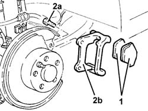
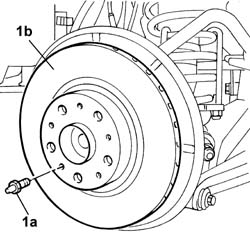

3310B52 REAR BRAKE DISCS - R.R. with brake calipers removed
- Path
- Procedures > 33 BRAKES > 3310 DISC BRAKES > 3310B REAR DISC BRAKES > 3310B52 REAR BRAKE DISCS - R.R. with brake calipers removed
- Kind
- repair procedure (removal / refitting; the operation number is the code)
- Applies to
- all engines; all production periods
- Interactive page
- https://sloeber94.github.io/elrnDB-lThss/en/#/78545
Applies to: all engines; all production periods
 Removing
Removing
 Refitting
Refitting1. Remove the rear brake pads.
2. Undo the fixing bolts (2a) and remove the brake caliper bracket (2b).

Applies to: all engines; all production periods
1. Undo the fixing pin (1a) and remove the brake disc (1b).

Applies to: all engines; all production periods
Refitting
Removing- Fit the brake disc in the housing on the hub.
- Tighten the pin fixing the brake disc to torque.
 | Value - daNm | Fastening | Component | Ø |
|---|---|---|---|---|
. | 2 | Bolt | REAR BRAKE DISCS | M8 |
- Fit the bracket complete with brake pads and tighten the bolts fixing it to the wheel hub.